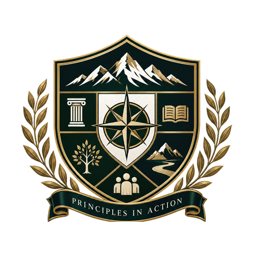

Character
Integrity made visible through repeated choices.

THE PRAXIS SOCIETYCALGARY · MMXXVICalgary, Alberta · Founded 2026
A society for people who believe character should accompany achievement, fellowship should include accountability, and principles should be visible in the way we live.
THE IDEA
ABOUT PRAXIS
The Praxis Society was founded in Calgary in 2026 around a simple belief: values mean little unless they become visible in conduct.
Praxis brings together people pursuing meaningful lives while remaining accountable to character, service, discipline, growth, and one another.
“Unity does not require uniformity.”
OUR FOUNDATION
THE SIX PILLARS
The pillars are not slogans. They are standards members are expected to translate into repeated choices.
Integrity made visible through repeated choices.
Mutual support joined with honest accountability.
The pursuit of worthwhile goals and the development of ability.
Contributing time, skill, leadership, or resources beyond ourselves.
Making actions consistent with commitments.
Remaining a learner and continuing to develop.
MEMBERSHIP
THE PATH IN
Membership is not recognition of status or self-description. It is acceptance of the standard a member agrees to uphold.
No hazing. No purchased membership. No status requirement. Candidacy derives its rigor from preparation, service, reflection, consistency, learning, and contribution.
INSTITUTIONAL LIFE
TRADITIONS
Traditions matter when they preserve memory, reinforce responsibility, and give future members something worth inheriting.
An annual observance of the Society’s founding in Calgary and the responsibilities inherited by current members.
MMXXVIInstitutional business, fellowship, recognition, reflection, and the President’s annual address.
PRAXISA substantial recurring initiative intended to create tangible community benefit.
ACTAA permanent record of the Society’s documents, members, leadership, service, and milestones.
MEMORIASERVICE
Service should prioritize meaningful community benefit over publicity, recognition, or merely symbolic participation.
GOVERNANCE
THE INSTITUTION
The Society’s governing documents preserve purpose, distribute authority, define membership, and protect institutional continuity.
Purpose, identity, Six Pillars, membership standard and constitutional framework.
OPEN PDF ↗Offices, elections, finances, records, accountability and institutional governance.
OPEN PDF ↗Candidacy, member expectations, traditions, symbols, conduct and culture.
OPEN PDF ↗THE PRAXIS SOCIETY
Character · Fellowship · Achievement · Service · Discipline · Growth
CALGARY, ALBERTA, CANADA · FOUNDED MMXXVI